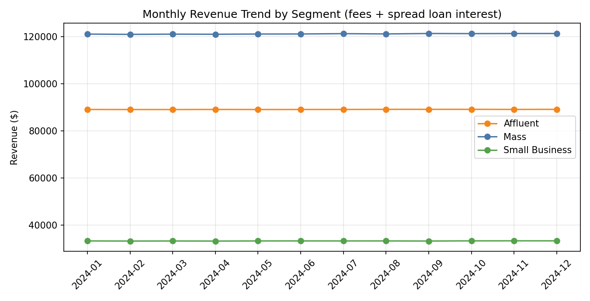
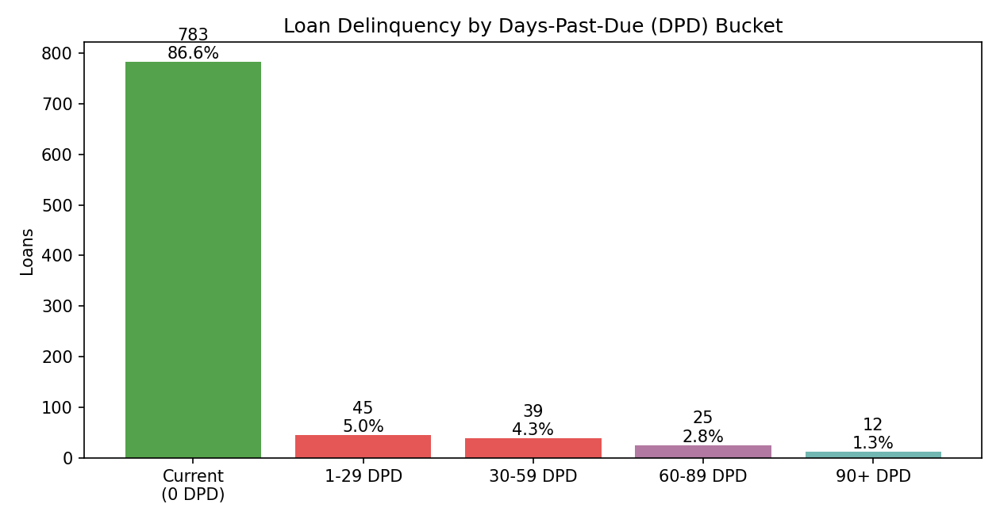
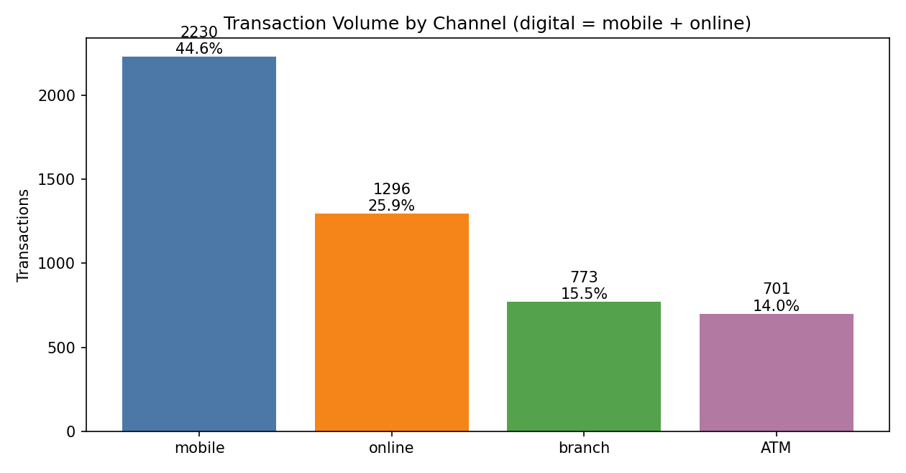
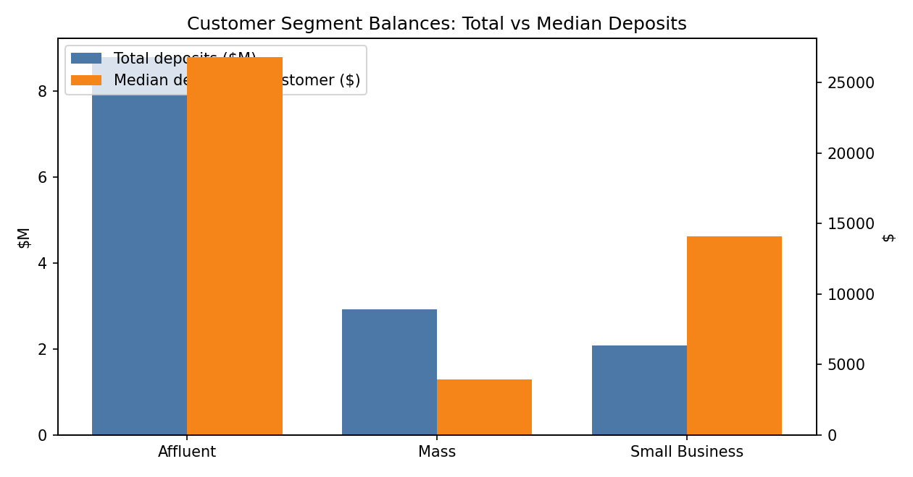

Executive KPI Cards (actual values from analysis.py)
800Total Customers
1,453Accounts
$13,780,469Total Deposits
$2,982,737Total Revenue
$41,244,219Loans Outstanding
8.41%Delinquency (30+ DPD)
1.33%Charge-off Proxy (90+ DPD)
70.52%Digital Share
47.5%Deep-Relationship Rate (3+ products)
1.82Accounts / Customer
Poor (<600) — 21.05%Worst Credit Band
271 → 401Monthly Actives
Module 2 — Revenue Trend by Segment

Module 3 — Delinquency by DPD Bucket

Module 4 — Channel Mix

Module 1 — Segment Balances

Module 1 — Segment Summary
| Segment | Customers | Accounts/Customer | Total Deposits | Median Deposit | Deep-Relationship % |
|---|---|---|---|---|---|
| Affluent | 194 | 1.88 | $8,779,011 | $26,796 | 49.48% |
| Mass | 494 | 1.79 | $2,915,752 | $3,958 | 47.17% |
| Small Business | 112 | 1.81 | $2,085,706 | $14,098 | 45.54% |
Module 2 — Revenue by Product Line
| Product Line | Revenue | Share |
|---|---|---|
| Auto loan interest | $0 | 0.0% |
| Personal loan interest | $0 | 0.0% |
| Mortgage interest | $0 | 0.0% |
| Transaction fees | $71,171 | 100.0% |
Key Insights
- Risk: 30+ DPD delinquency is 8.41% overall but 21.05% in the Poor (<600) band — limit and pricing reviews belong there first.
- Revenue: Mass is the largest segment by total revenue ($1,454,008), while Affluent earns most per customer ($5,509).
- Channels: digital (mobile + online) carries 70.52% of transactions; monthly actives grew 271 → 401 during 2024.
- Engagement: 47.5% of customers hold 3+ product types; the single-product base is the cross-sell opportunity.
- Data quality: 14/14 Module 0 checks fully clean.
Full auto-generated executive pack: outputs/kpi_pack.md • Power BI build spec: dashboard_spec.md